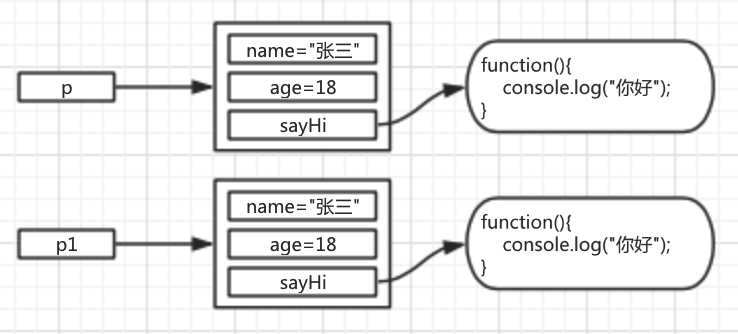

传统构造函数存在的问题
1. 发现问题
现有构造函数如下：
function Person(name, age){
this.name = name;
this.age = age;
this.sayHi = function(){
console.log("你好");
}
}
调用该构造函数创建对象，并对比创建出来的对象的sayHi方法：
var p = new Person("张三", 18);
var p1 = new Person("李四", 19);
console.log(p.sayHi == p1.sayHi); //输出结果为false
由于每个对象都是由new Person创建出来的，因此每创建一个对象，函数sayHi都会被重新创建一次，这个时候，每个对象都拥有一个独立的，但是功能完全相同的方法。

功能相同的函数，完全没有必要再内存中存在这么多份。所以就造成了资源浪费。
2. 解决问题
这里最好的办法就是将函数体放在构造函数之外. 在构造函数中只需要引用该函数即可。
function sayHello(){
console.log("你好");
}
function Person(name, age){
this.name = name;
this.age = age;
this.sayHi = sayHello;
}
//调用该构造函数创建对象，并对比创建出来的对象的sayHi方法
var p = new Person("张三", 18);
var p1 = new Person("李四", 19);
console.log(p.sayHi == p1.sayHi); //输出结果为true
这样写依然存在问题：
全局变量增多，会增加引入框架命名冲突的风险
代码结构混乱，会变得难以维护